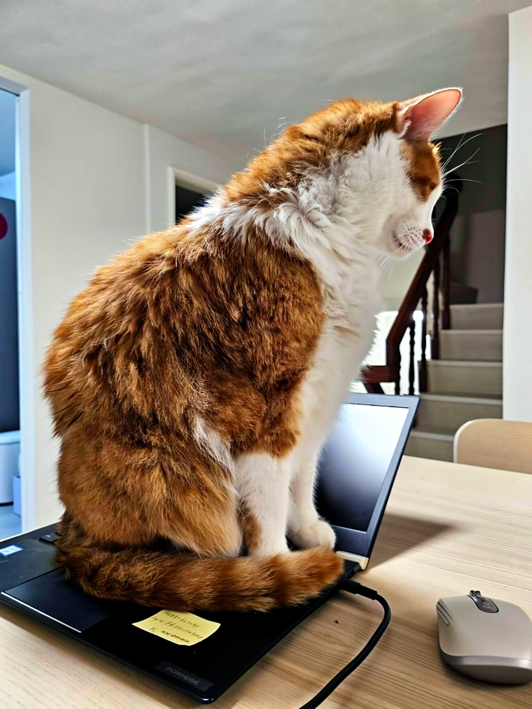
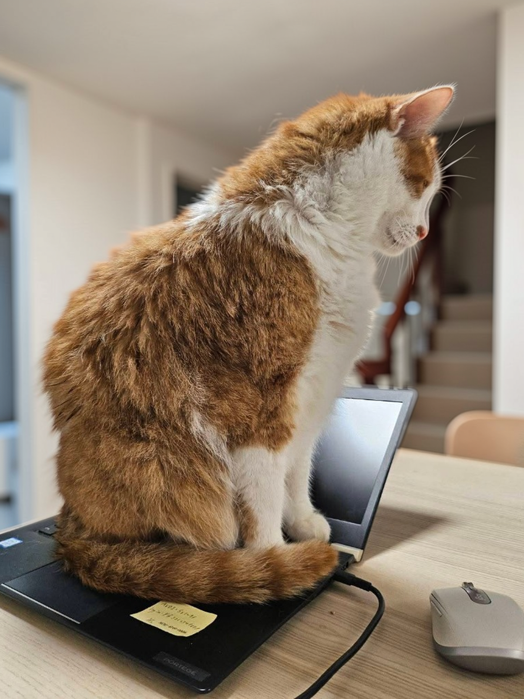
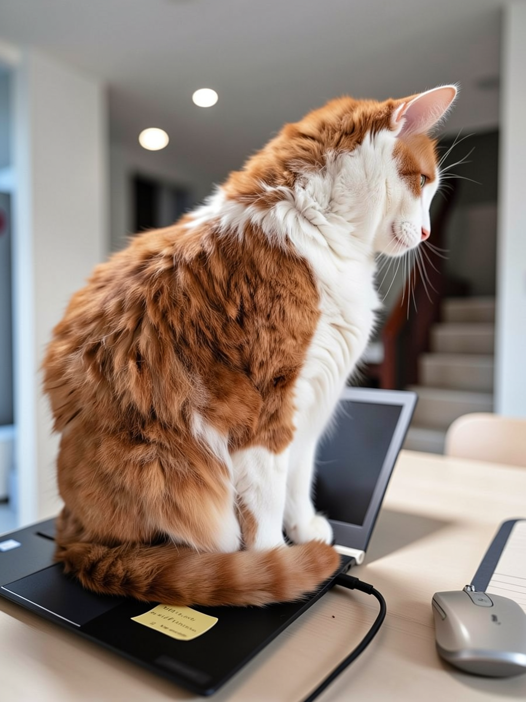
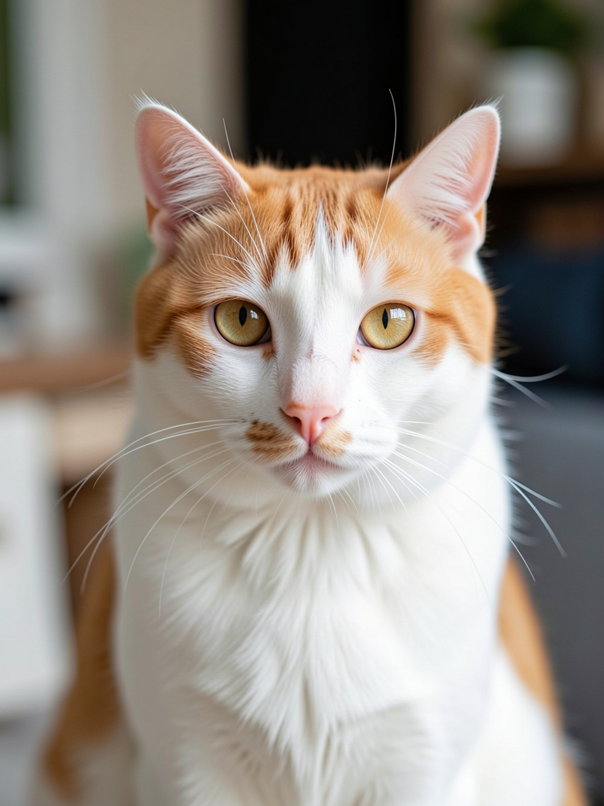
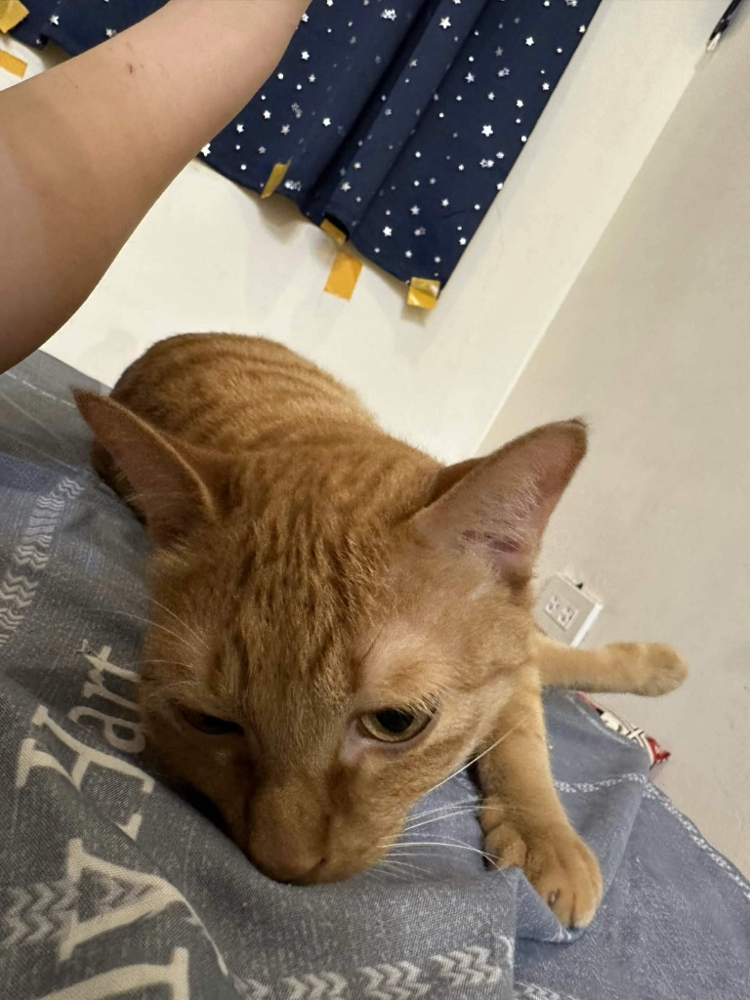
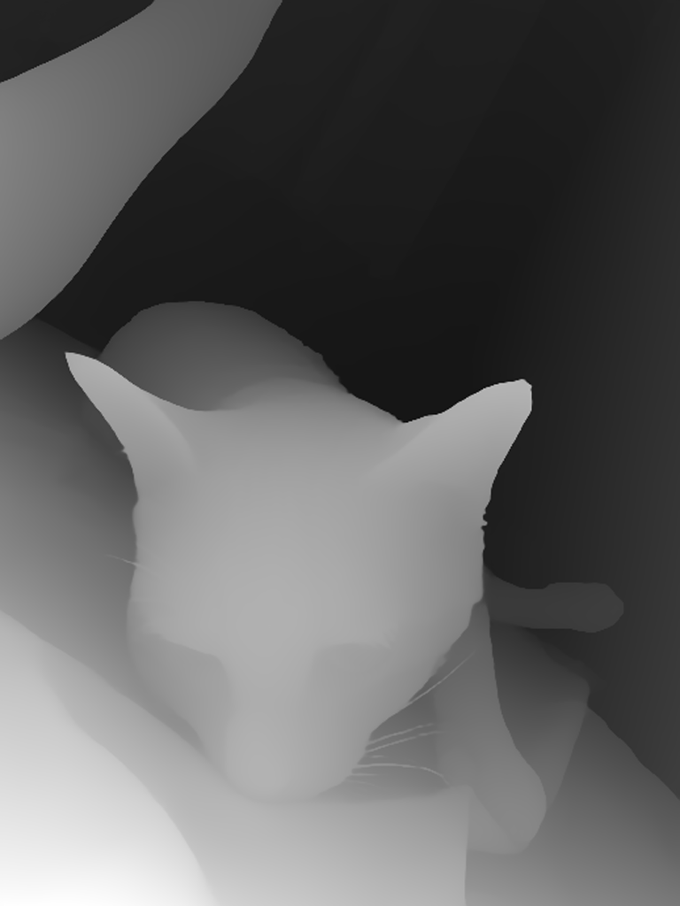
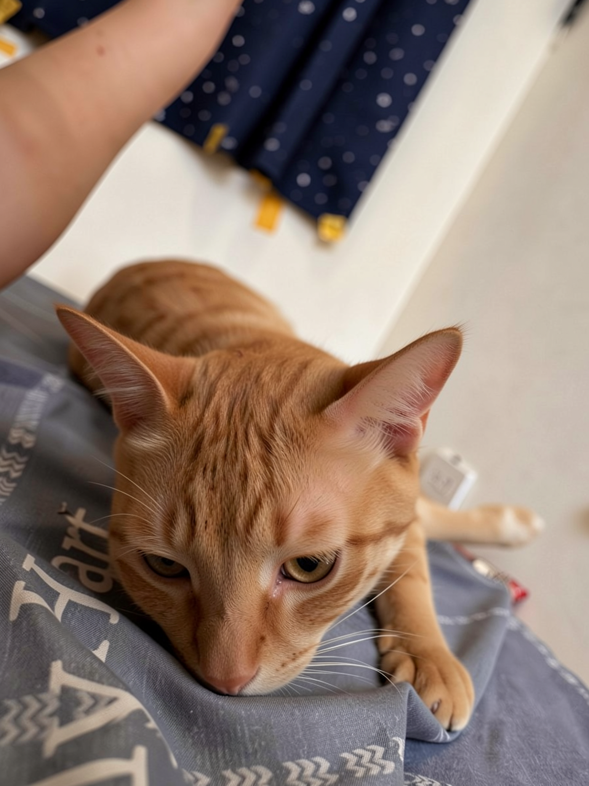
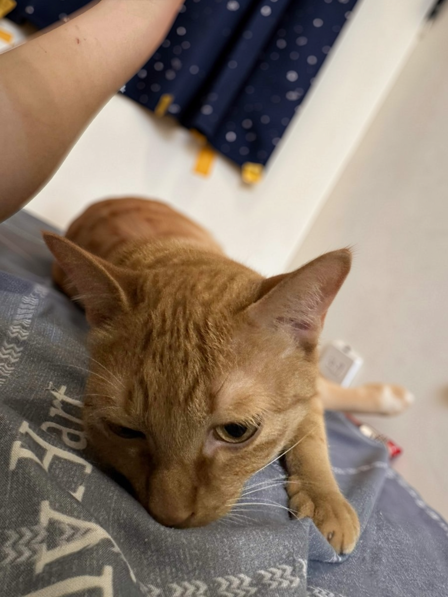
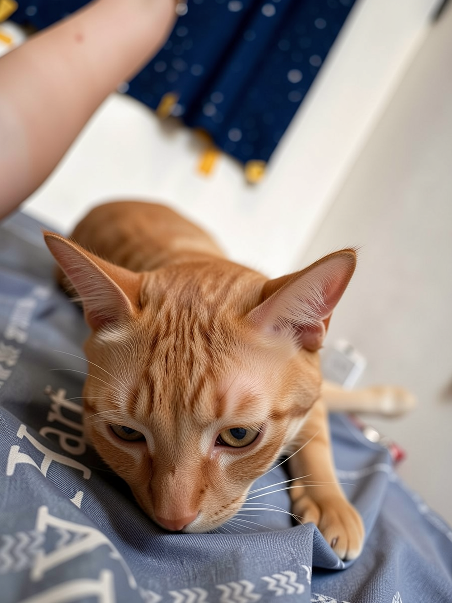
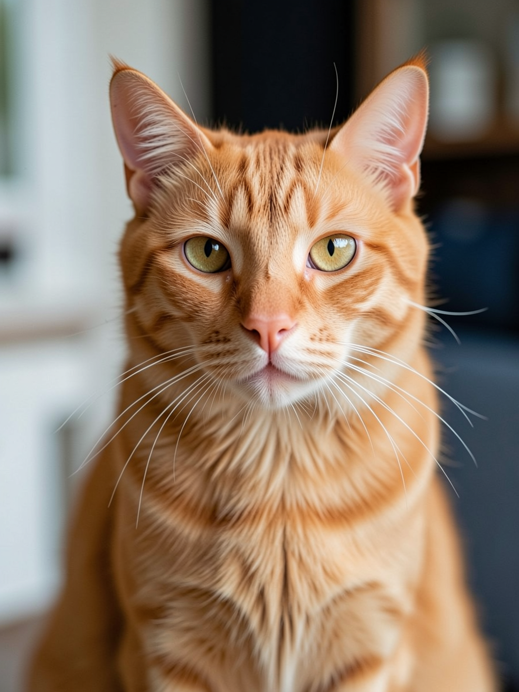

Original Image (原圖)

Depth Map (深度圖)

Version 1: f/1.2 Bokeh

Version 2: f/1.2 + Film

Version 4: f/1.2 + Film + Detail

Version 5: Low-Denoise Image-to-Image (strength = 0.12)

Version 6: Depth-Masked Composite (100% Original Cat)

Version 7: f/1.2 + Film + Pet LoRA (v67_pet)

Version 8: Frequency-Separated Hybrid (100% Original Fur Detail + FLUX Style)
Version 9: Text-to-Image (T2I) Direct Generation (No Ref Image)

Original Image (原圖)

Depth Map (深度圖)

Version 1: Raw FLUX (DSLR f/1.2 + Film)

Version 2: Depth-Masked Composite (100% Original Cat)

Version 3: f/1.2 + Film + Pet LoRA (v67_pet)

Version 4: Frequency-Separated Hybrid (100% Original Fur Detail + FLUX Style)
Version 5: Text-to-Image (T2I) Direct Generation (No Ref Image)
